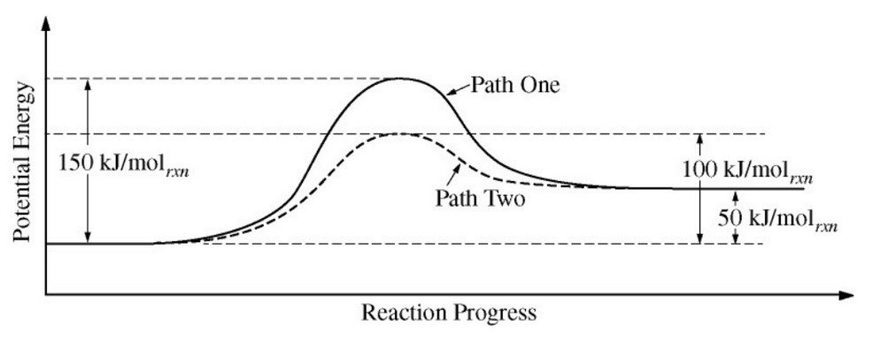

$$ \ce{XY2 -> X + Y2} $$
The equation above represents the decomposition of a compound \(\ce{XY2}\). The diagram below shows two reaction profiles (path one and path two) for the decomposition of \(\ce{XY2}\).

Which of the following best describes the flow of heat when 1.0 mol of \(\ce{XY2}\) decomposes?